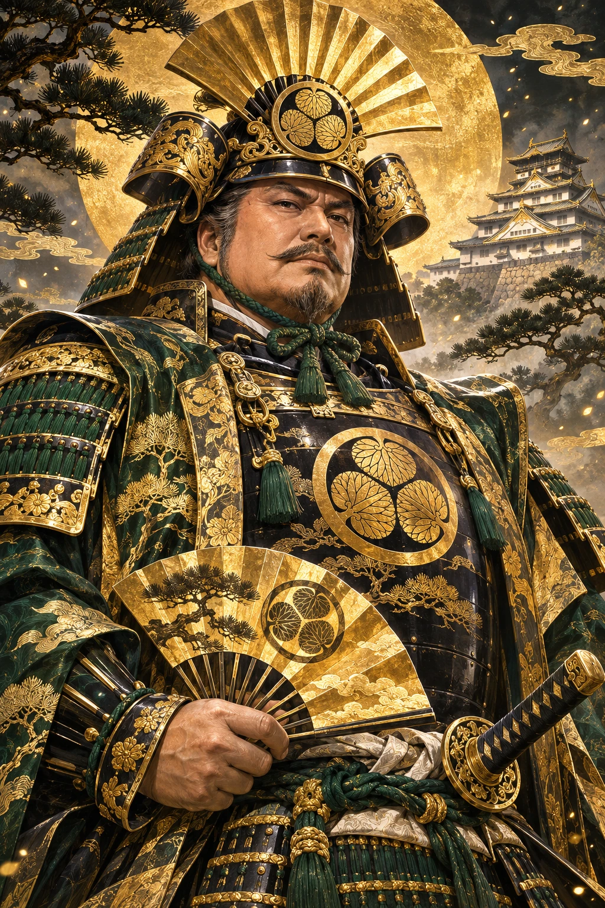

内容更新：
城を育て、将を集め、世界と時を重ねる。
「戦国大戦」は、PC・スマートフォンのブラウザで遊ぶ戦国ストラテジーゲームです。城下町の内政、武将の登用、軍団の編成、天下地図の戦役を通じて、自分の領国を育てていきます。
戦国期から近世初頭の人物と城を、年代を横断した「群雄集結」の設定で収録しています。歴史上の全武将を網羅した名簿ではなく、能力・特技・ランク・所属や勢力配置はゲーム向けの創作です。
一城の志が、天下を動かす。
全プレイヤーが共通の年月を歩み、世界チャットやギルド、共通フィールドで領主同士が出会います。世界時計は1560年1月から1615年12月までを繰り返します。区切りには占領拠点をリセットし、終わりに保有した本拠以外の城数に応じた報酬を受け取ります。選んだ本拠、武将・施設・所持資源は引き継ぎます。
戦国大戦の遊び方を読む一人の武将、一つの城に、重なる姿。
| 対象 | 種類と段階 | 基本画像数 |
|---|---|---|
| 武将 | 256名 × 8ランク | 2,048 |
| 城郭 | 128城 × Lv.1〜32 | 4,096 |
| 施設 | 64種類 × Lv.1〜32 | 2,048 |
| オリジナルBGM | 16曲 | — |
8,192点は、配信用の画像シートに収めた各イラストの単位で数えています。画像ファイル数は256枚です。武将にはD・C・B・A・S・SS・SSS・Uの8ランク、城郭と施設には32段階の成長があります。
音楽は箏・三味線・笛・笙・太鼓などをイメージして構成した、本作オリジナルの16曲。ブラウザ内で音を合成し、場面に合わせた自動選曲と音楽帳からの手動選曲に対応しています。
ゲームの世界を描く、独自の表現。
武将は和風アニメ調、城や施設は発展が伝わる建築イラストとして制作しています。衣装・兜・装飾・背景・建物の構成を描き分けた、本作用の表現です。人物の実際の容姿や、城郭の厳密な復元図を示すものではありません。

德川家康 U
運営が所持するUランクには、黒・深緑・金の甲冑、葵の意匠、軍配、江戸城を背景にした専用の一枚絵を用意しています。表記は「德川家康 U」です。
この専用画像は8,192点の基本画像を維持したうえで表示時に差し替えます。通常の徳川家康の各ランクには影響せず、専用Uの所持はサーバーで確認した運営領主だけに認められます。
- イラストの構成と制作方針画像数の数え方、ランク・成長段階、専用画像の取り扱い。
- 武将の収録方針・人物資料全国から選抜した256名と、人物・所属・能力の扱い。
日本の山河と、城跡の位置をたどる。
天下地図は、公開された地理データと、城郭・史跡・施設の代表地点から描いています。日本の海岸線、標高に応じた段彩と陰影、参考県境、主要な河川・湖を重ねています。
海岸線や標高は現代の地理資料です。戦国期の埋立て前の海岸線や旧国境を測量復元した地図ではありません。城の点は史跡・施設の代表地点で、天守や本丸の測量中心を意味しません。勢力配置と進軍経路はゲーム設定です。
- Natural EarthMade with Natural Earth. 海岸線・参考県境・河川・湖の地理データを加工して使用。Natural EarthのデータはPublic Domainです。
- 国土地理院・地理院タイル地理院タイル（国土地理院）を加工して作成。標高タイルと陰影起伏図をもとに、段彩と陰影を合成しています。
- 『日本歴史地名大系』施設・地点項目データセットCODH作成、doi:10.20676/00000456、CC BY 4.0。城の代表地点の確認に使用し、ゲーム内名称との対応付けと項目選択を行っています。
- 福井県 観光情報・オープンデータCC BY 2.1 JP。丸岡城・大野城の観光施設代表点を使用しています。
- 地図の全出典・利用条件・加工内容128城の個別出典、地図データの精度と限界、提供元へのクレジット。
その家を知る、もう一つのしるし。
武将と城に登場する勢力へ、家紋または識別章を割り当てています。「家紋帳」では家名を検索し、代表意匠と採用理由、資料の確認状況を読めます。


家紋は、資料の名称・構成を参考に独自に描いたゲーム用の略図です。時代・分家・人物・器物による異形を、一つの代表意匠として整理しています。「諸家」「在地衆」などの集合勢力には、ゲーム独自の群章を用いています。
資料確認済み、伝承・二次資料、参考・創作の区分を分け、同定に限界がある意匠はその旨を記載しています。同じ基本図形を複数の家が使う場合もあります。
家紋・群章の対応表と出典を読む© KASAI SOLUTIONS
本サイトの著作権表記はKASAI SOLUTIONSです。ゲームの表示・説明・オリジナル素材のクレジットを、この名称で統一しています。
地理データなどの第三者資料には、それぞれの提供元の利用条件が適用されます。地図上のクレジットと、地図・家紋・人物の各出典資料に、提供元・加工内容・参照先を記載しています。
データの引き継ぎについて
領主の認証情報とゲーム進行のバックアップ方法は、専用ページで案内しています。機種変更やサイトのURL変更をしたときは、同じ領主IDへ再接続して続きを確認してください。
機種変更・ドメイン移行・データ復元の案内